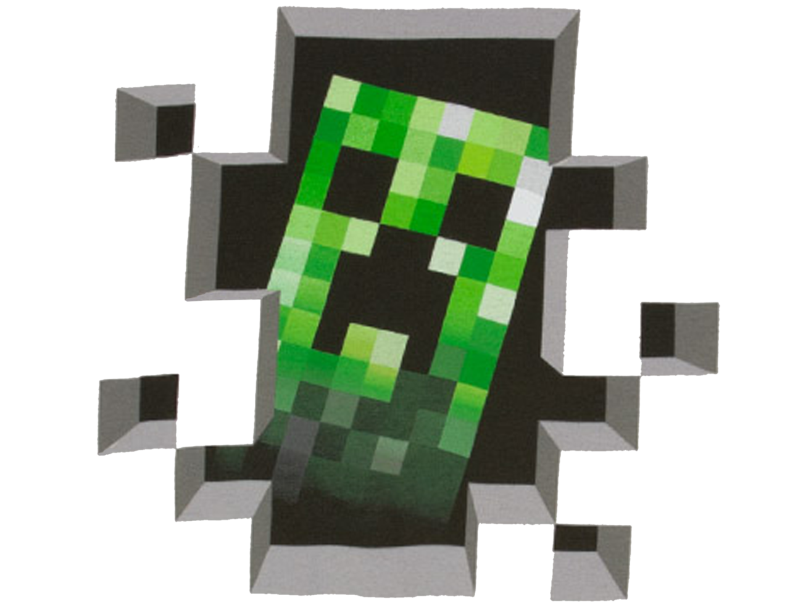
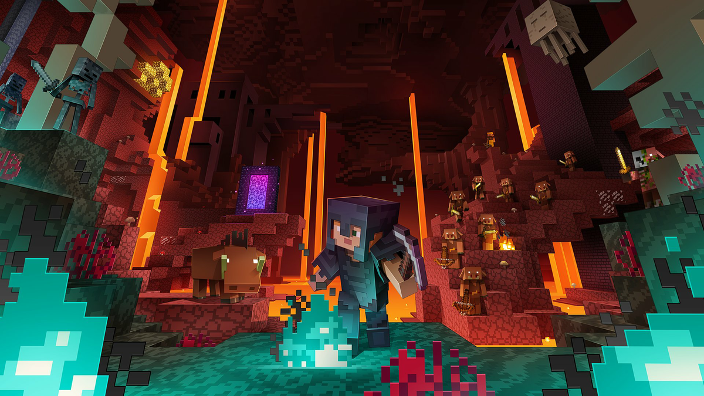
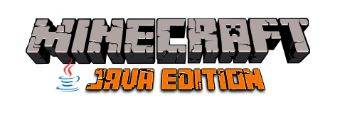
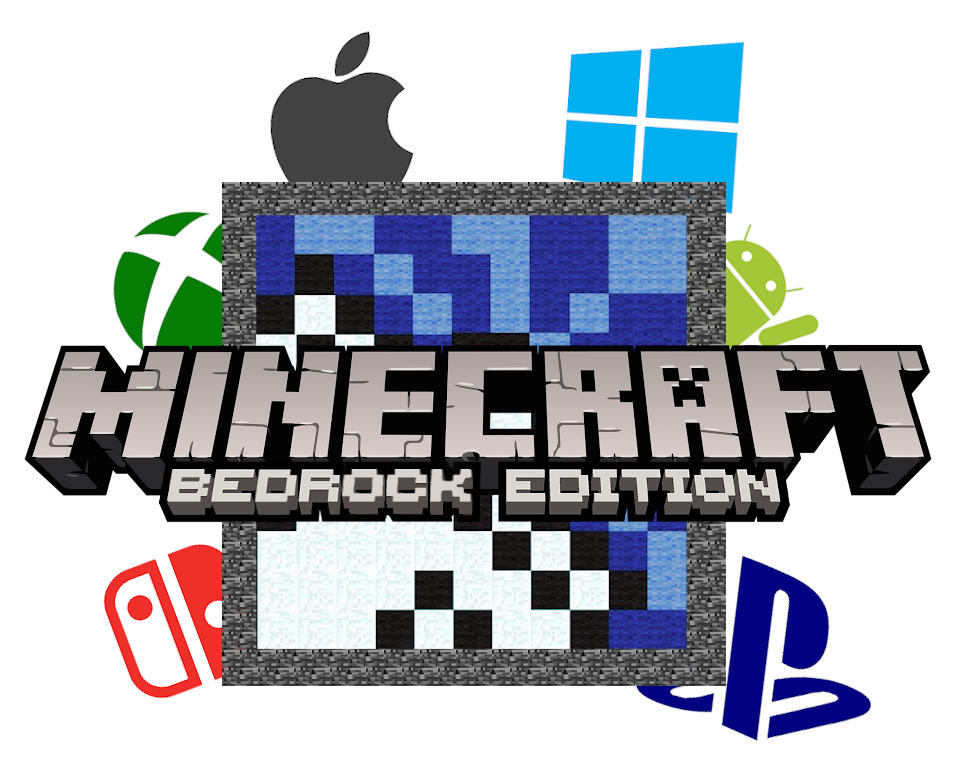

Modest Guides to Minecraft: Homepage
Welcome!

Welcome to Modest Guides to Minecraft! Here you can find a collection of concise and compact guides covering topics like mining, combat, and farming. Hopefully they will be of use to you! All of these guides are taken from Apex Minecraft Hosting's Website from their Complete Guide to Minecraft. Since this website is for personal use, and for a Web Design project, it is unlikely to be published so I can't get sued for unlawfully using another website's copyrighted content. Hooray!
Click on one of the topics in the navigation bar to learn more!
Note:

Note that some of the information on this website may not be accurate to your version of Minecraft, whether you are using a different version entirely like Bedrock, or Pocket Edition, or if future updates have made the information on this website outdated. I will take no responsibility for any frustration or misunderstandings caused by this.
You have been warned!
The information on this website is accurate to Minecraft: Java Edition as of update 1.16 aka The Nether Update. This update launched on June 23rd 2020.
Bedrock VS Java:
For those who don't know, there are two main versions of Minecraft.
Minecraft: Java Edition
Minecraft: Java Edition is the original version of Minecraft released all the way back in 2010 for the PC. If you have Minecraft on your computer at home, it is very likely that this is the version you have. Features it has over Bedrock Edition include:
- Mod Support
- Hardcore Mode
- Community and Custom Servers
- Better Visuals
Minecraft: Bedrock Edition
Minecraft: Bedrock Edition is a version of the game created long after its original release on PC, and after its developers, Mojang, being acquired by Microsoft. Minecraft: Bedrock Edition is the version of the game you can find on phones, Xboxes, Playstations, and Nintendo Switches. While Java is considered to be the superior version of the game, Bedrock edition has some major features Java lacks:
- Crossplay with players on any Gaming Console
- Superior Optimization than Java